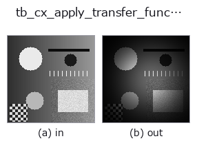

typed op• 資料種類:cimage → cimage
• 呼叫:fullseye.apply(img, "tb_cx_apply_transfer_function", a=0.5, b=0.5)(2-D 的模型是一張圖 + 兩個純量旋鈕 a,b∈[0,1])

*圖為在 128×128 合成輸入上實際執行的輸出。左為輸入，右為輸出。點雲以俯視散點顯示(亮度 = z)，一維序列為折線，體資料為沿 z 的最大值投影，影片為中間影格，複數影像為振幅；無法成像的回傳值直接顯示數值。*
掃描旋鈕 a(0.1 / 0.5 / 0.9，另一旋鈕取預設):
▸ tb_cx_apply_transfer_function: 旋鈕 a 掃描 (文件網站)
*旋鈕 b 不改變輸出(實測: 0.1 / 0.5 / 0.9 相同)。*
階段(前置運算子 → 本運算子，由左至右):
▸ tb_cx_apply_transfer_function: 處理階段 (文件網站)
換別的影像(合成場景 / 照片 / 硬幣。上排為輸入，下排為對應輸出。旋鈕取預設):
▸ tb_cx_apply_transfer_function: 其他輸入影像 (文件網站)
將已置中的頻譜與濾波器 H 相乘 -> (H, W) complex128。
> 以下的詳細說明為原文 —— 摘要與標題已翻譯。
The honest primitive under ops.lowpass / ops.highpass, but
complex-preserving: the filtered spectrum is returned as a complex field (not immediately inverted and real-cast), so it can be chained, inspected, or handed to cx_ifft. H is a same-shape transfer function laid out in the *centred* convention of cx_fft (DC at the centre); it may be real (a magnitude mask) or complex (a phase-shifting filter). A real cx is FFT'd first (module convenience).
Typed bridge of the 2d op cx_apply_transfer_function into the 2-D evolution registry: the same implementation, called under the op(v, a, b) convention. a sets the width of the transfer function H, which the bridge builds per call at the spectrum's own shape: a centred Gaussian low-pass H = exp(-r^2 / (2 sigma^2)) with sigma = 0.02 + 0.48 a cycles/pixel (0.26 at a=0.5). b is unused. (Until 2026-10-07 H was bound once as a fixed 32x32 array, so every other image size was refused.)
• 範例資料目錄(下載 URL / 授權) —— 2-D 用 skimage.data(BSD/公有領域)加合成圖,3-D 給出真實資料源(Stanford/PDS 等)的下載 URL。
• 運算子來歷與參考文獻 —— 該運算子族所依據的研究/方法出處。
下面的程式已確認可以執行(與圖相同的輸入)。在 Studio 說明中，此區塊會變成按鈕，可當場載入並執行。
img_to_cimage 0.50 0.50 tb_cx_apply_transfer_function 0.50 0.50
• (尚無)
cimage 作為輸入)identity · tb_cx_ifft · tb_cx_magnitude · tb_cx_phase · tb_cx_real · tb_cx_imag · tb_cx_log_magnitude · tb_cplx_cr_residual
typed)tb_points_to_voxel · tb_estimate_point_normals · tb_iss_keypoints · tb_project_points · tb_render_point_depth · tb_statistical_outlier_removal · tb_radius_outlier_removal · tb_voxel_grid_downsample
*Provenance: ops.py — 2D 運算子登記表。本條目由 tools/opdocs.py md 自動產生(請勿手動編輯)。*
© 2026 Kazufumi Furuse — Fullseye operator documentation. Licensed under Apache-2.0.